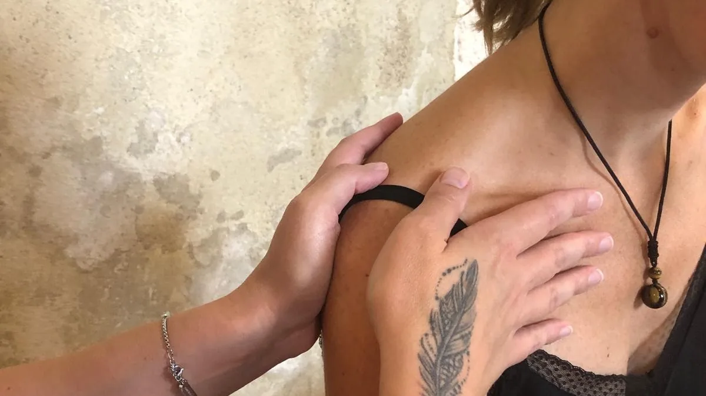
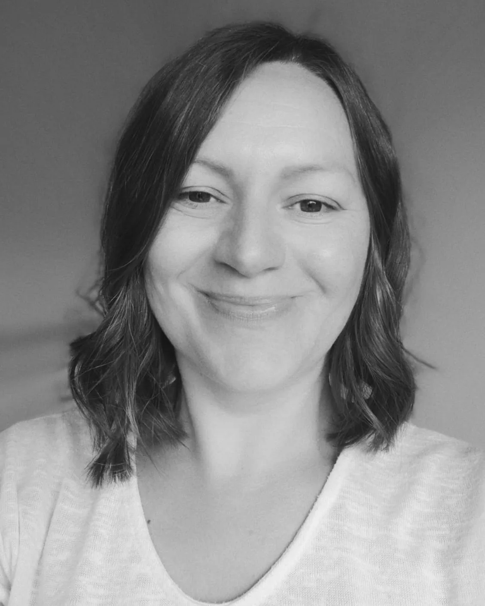

Retrouver un espace de calme à l'intérieur de vous
Lorsque tout s'accélère autour de nous, il devient difficile de savoir comment ralentir. Les pratiques somatiques offrent des repères simples pour retrouver un sentiment d'ancrage et de sécurité.
Delphine Wydrzynski · Espace ONE
J'accompagne les femmes qui ont beaucoup porté, beaucoup donné et beaucoup tenu à retrouver un espace où elles peuvent enfin souffler, ressentir et se reconnecter à elles-mêmes.
Une approche corporelle de régulation du système nerveux. Instructrice agréée LemniWave® et Micro Massage®. À Meylan et en visio.
Faites défiler : le vent va tomber.
Si oui, le problème n'est peut-être pas un manque de volonté.
Votre système nerveux fait simplement de son mieux pour vous protéger.
Concrètement

Au cabinet à Meylan. Vous restez habillée, allongée, dans un espace calme et enveloppant.
80 €55 min
Une séance de 55 min, possible en visio, où que vous soyez.
87 €55 min
Espace Initial, Parcours ONE, Immersion ONE : de quatre semaines à quatre mois, pour avancer à votre rythme.
Les voirdès 450 €
Des séances à vivre ensemble, des journées de pratique, et des stages d'initiation pour transmettre à votre tour.
47 €en visio, 67 € sur place
Vous ne savez pas par où commencer ? Un appel découverte de 30 minutes, gratuit, pour faire le point ensemble.
Réserver l'appel Tous les tarifsEt si votre corps détenait déjà une partie de la solution ?
Quand nous traversons trop de stress, de pression ou de charge nerveuse, nous cherchons souvent des réponses dans notre tête.
Mais le corps possède son propre langage.
Lorsqu'on apprend à l'écouter, il devient possible de retrouver progressivement :
plus de calme
plus de présence
plus de stabilité émotionnelle
plus de concentration
plus de sécurité intérieure
Sans avoir à se battre contre soi-même.
Un espace pour expérimenter, pas pour performer
Je vous propose simplement d'explorer des pratiques corporelles accessibles qui permettent au système nerveux de retrouver davantage d'équilibre et de souplesse. Cette recherche de souplesse plutôt que de contrôle est au cœur de l'approche. Chaque personne avance à son rythme.
Le plus important n'est pas de comprendre. C'est de ressentir.
Ce que vous pouvez découvrir ici
Lorsque tout s'accélère autour de nous, il devient difficile de savoir comment ralentir. Les pratiques somatiques offrent des repères simples pour retrouver un sentiment d'ancrage et de sécurité.
Le corps s'exprime souvent avant les mots. Les tensions, les inconforts ou certaines réactions automatiques peuvent devenir des informations précieuses lorsque l'on apprend à les écouter.
L'objectif n'est pas d'éliminer le stress. L'objectif est de développer davantage de souplesse pour le traverser sans qu'il prenne toute la place.
Les trois accompagnements
Peut-être avez-vous simplement besoin de relâcher la pression. Peut-être ressentez-vous l'envie d'aller plus loin pour retrouver un équilibre durable. Ou peut-être savez-vous déjà qu'un changement plus profond est en train de vous appeler.
Souffler
4 semaines · 450 €
Quand tout semble un peu trop. Une parenthèse pour ralentir, relâcher la pression et retrouver un peu d'espace en vous.
Retrouver son équilibre · le cœur de l'accompagnement
12 semaines · 1 300 €
Vous tenez depuis longtemps. Mais votre corps reste en alerte. Parcours ONE vous aide à sortir progressivement de cet état d'hypervigilance pour retrouver davantage de stabilité.
Transformer en profondeur
4 mois · 2 000 €
Quand vous sentez que le changement doit aller plus loin. Le temps, l'espace et l'accompagnement nécessaires pour des changements plus profonds et plus durables.
Mon approche
J'ai découvert dans les approches somatiques une manière différente d'accompagner le changement. Au fil de ma pratique, j'ai observé combien le fait de revenir au corps pouvait apporter plus de calme intérieur, une meilleure présence à soi et davantage de stabilité dans le quotidien.
Je ne cherche pas à vous transmettre une méthode de plus ou une solution toute faite. Je vous invite à renouer avec une ressource que vous possédez déjà : votre capacité à ressentir, à vous réguler et à retrouver votre équilibre.
Instructrice agréée
LemniWave®
Micro Massage®
Parce que certaines choses ne s'apprennent pas seulement avec la tête. Elles se découvrent, se vivent et s'intègrent par l'expérience.
Les stages et les transmissions
À propos
J'ai découvert les approches somatiques à un moment où je cherchais moins de lutte et plus de paix intérieure.
Au fil des années, j'ai constaté combien le retour au corps pouvait transformer notre manière de vivre le stress, les émotions et les défis du quotidien. Aujourd'hui, j'accompagne les femmes qui ont beaucoup porté, beaucoup donné et beaucoup tenu, à retrouver un espace où elles peuvent enfin souffler, ressentir et se reconnecter à elles-mêmes.
Elles en parlent
Même quand ça secoue, je ne pars plus en vrille. Je sais revenir à moi. Je me sens ancrée. C'est un vrai avant/après.
Michelle
Aujourd'hui j'ai dit non sans culpabiliser. Une première. Je sens mes limites, je me sens solide. ONE m'a reconnectée à moi. Je suis tellement reconnaissante.
Carole
J'ai passé une journée entière sans me sentir en tension. C'est fou. Je ne pensais pas que c'était possible pour moi. Ça change tout.
Anne Cécile
Delphine… je crois que je respire vraiment pour la première fois depuis des années. Tu m'as sortie de cet état d'alerte permanent. Je me sens stable. Merci pour ça.
Anabelle
Merci à toi pour ta bienveillance et ton empathie. N'hésitez pas une seule seconde.
Aurore
Contrairement à d'autres, elle n'a pas mis en avant ses capacités. Elle m'a placée au cœur des séances. Garde le cap, et rappelle-toi : « tu es ta propre limite ».
Camille
Quand le corps se sent en sécurité, tout devient plus facile.
La vie ne devient pas parfaite. Mais on la traverse avec plus de souplesse.
Le premier pas
Un appel découverte, gratuit, 30 minutes.
Pour faire le point sur ce que vous vivez et sentir ensemble quel espace est juste pour vous. Rien à préparer, rien à réussir.